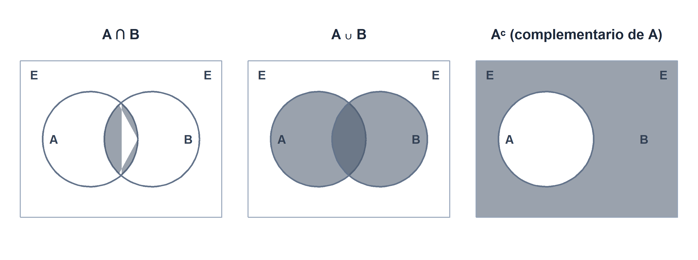
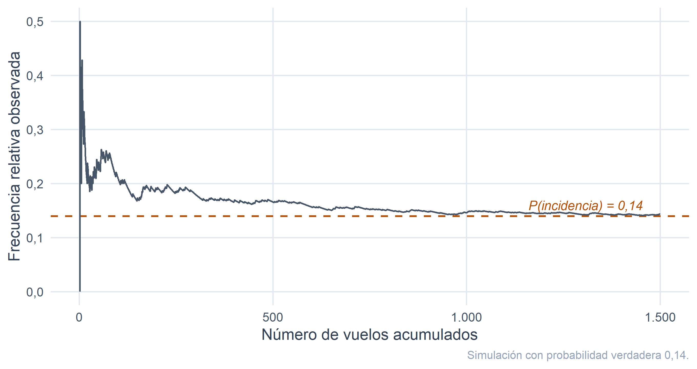

6 Introducción a la probabilidad.
Figura 6.1
Figura 6.1. La probabilidad nació sobre el tapete: dados, cartas y algún cazarrecompensas con demasiado tiempo libre.
Los cinco capítulos anteriores han estado dedicados a describir. Con la ayuda de Hyperdrive Express, Shuttlepod Movers, la flota de los tres astilleros galácticos y la muestra completa de \(300\) compañías del universo R-Stars, hemos aprendido a resumir información con medidas de posición y dispersión, a estudiar la relación entre variables mediante tablas de contingencia y coeficientes de correlación, a ajustar modelos de regresión y, en el capítulo anterior, a construir números índice para comparar magnitudes económicas en el tiempo. Ha sido, en cierto modo, un ejercicio de cartografía: dibujar el mapa de lo que hay.
A partir de este capítulo abrimos un bloque distinto. En lugar de describir lo que ha pasado, empezaremos a hablar de lo que podría pasar. En lugar de decir que «los cargueros de la flota tienen un tonelaje medio de 734,65 miles de toneladas», querremos decir cosas como: «si mañana escogemos al azar un carguero de la flota galáctica, ¿qué probabilidad hay de que sea pesado?»; o «entre las compañías R-Stars que han tenido pérdidas este año, ¿cuál es la probabilidad de que tengan la flota categorizada como ANTIGUA?»; o el clásico dilema del jefe de mantenimiento estelar: «acaba de fallar una nave; ¿de qué astillero es más probable que provenga?».
Pasar de la descripción a la incertidumbre exige un nuevo lenguaje. No basta con hablar de frecuencias observadas: necesitamos formalizar qué queremos decir cuando afirmamos que un suceso es «poco probable», «casi seguro» o «igual de probable que el otro». Ese lenguaje es el Cálculo de Probabilidades, cuyos cimientos ocupan este capítulo y los tres siguientes.
Como todo lenguaje, tiene su historia. La probabilidad no nació en un aula universitaria, sino sobre un tapete de juego: en el siglo XVII, un aficionado a los dados llamado Chevalier de Méré le pidió a Blaise Pascal que le explicara por qué perdía dinero de forma sistemática apostando de cierta manera. Pascal escribió a Fermat, Fermat le contestó y, entre los dos, pusieron los cimientos de lo que hoy manejamos con toda naturalidad en balances, seguros y modelos de riesgo. Casi tres siglos más tarde, un ruso serio llamado Andrei N. Kolmogorov pondría orden axiomático en un jardín que empezaba a parecerse mucho a un tiovivo. Los cargueros galácticos aún no existían, pero, si hubieran existido, seguro que Pascal habría escrito otra carta.
6.1 Conceptos básicos. Sucesos aleatorios.
6.1.1 Experimentos deterministas y experimentos aleatorios.
Llamamos experimento a cualquier acción cuyos resultados sean identificables u observables. La estadística distingue dos grandes tipos:
- Experimento determinista es aquel en el que, ante las mismas condiciones de partida, se obtiene siempre el mismo resultado. Si soltamos una llave inglesa desde el hangar de mantenimiento del astillero KORRIGAN de Klendathu, sabemos con la misma certeza con que sabemos nuestro nombre que caerá al suelo (y probablemente sobre el pie de alguien). No hay incertidumbre: hay física.
- Experimento aleatorio es aquel en el que, ante las mismas condiciones de partida, el resultado puede ser diferente y no sabemos de antemano cuál de los resultados posibles ocurrirá. Elegir al azar un carguero de la flota galáctica y anotar de qué astillero procede es aleatorio: el resultado depende de un mecanismo de selección que no podemos anticipar caso por caso. Y lo mismo ocurre con casi cualquier decisión empresarial interesante: fijar el precio de un contrato de flete sin saber cuántas incidencias tendrá la ruta, aceptar un cliente sin saber si pagará a tiempo, contratar seguros sin saber si habrá siniestros.
La estadística —y, dentro de ella, la probabilidad— se ocupa exclusivamente de los segundos.
6.1.2 Espacio muestral y sucesos.
Todo experimento aleatorio tiene asociado un conjunto de resultados posibles. Cada uno de esos resultados se denomina suceso elemental (o suceso básico): es el resultado más simple que puede producirse. Al conjunto de todos ellos lo llamamos espacio muestral y lo denotamos por \(E\).
Los ejemplos clásicos son de manual: al lanzar un dado, el espacio muestral es \(E = \{1, 2, 3, 4, 5, 6\}\); al lanzar dos veces una moneda, \(E = \{(c,c),(c,+),(+,c),(+,+)\}\). Nuestro universo, sin embargo, ofrece ejemplos más interesantes. Consideremos el experimento «elegir al azar un carguero de la flota galáctica formada por los \(48\) vehículos del registro de astilleros» y anotar sus características. El espacio muestral es, entonces, el conjunto de los \(48\) cargueros:
\[ E = \{ \text{iron sovereign}, \text{goliath hauler}, \text{crestfall prime}, \ldots \}. \]
Un suceso (o suceso aleatorio) es, formalmente, un subconjunto del espacio muestral. Ocurre cuando el resultado del experimento es alguno de los sucesos elementales que lo integran. Sobre nuestra flota galáctica podemos definir, por ejemplo:
- \(K =\) «el carguero es del astillero KORRIGAN»,
- \(S =\) «el carguero es del astillero SELENE»,
- \(A =\) «el carguero es del astillero ARCTURUS»,
- \(P =\) «el carguero es pesado» (tonelaje superior a \(700\) mil toneladas),
- \(V =\) «el carguero es veterano» (antigüedad mayor de \(8\) años).
Cada uno de estos sucesos agrupa una parte concreta de la flota. Como los cargueros que componen cada astillero son datos reales del fichero, podemos determinar exactamente qué cargueros integran cada suceso. Por ejemplo, KORRIGAN reúne los cargueros iron sovereign, goliath hauler, crestfall prime, armada bulk carrier, ironclad endeavour, siege runner, bastion freighter, rampart express, titan’s burden, fortress mover, bulwark cargo, redoubt transport, vanguard heavy, parapet carrier, rampart ii, citadel freight, y de manera análoga se describen SELENE y ARCTURUS.
6.1.3 Operaciones con sucesos.
Los sucesos se combinan entre sí mediante tres operaciones básicas, que a estas alturas del curso deberían resultarnos familiares porque son las mismas de la teoría de conjuntos:
- Unión (\(S_1 \cup S_2\)): suceso formado por los elementos que están en \(S_1\), en \(S_2\) o en ambos. Ocurre cuando ocurre al menos uno de los dos («o»).
- Intersección (\(S_1 \cap S_2\)): suceso formado por los elementos que están simultáneamente en \(S_1\) y en \(S_2\). Ocurre cuando ocurren los dos a la vez («y»).
- Complementario (\(S^{*}\), también escrito \(\bar S\) o \(S^{c}\)): suceso formado por los elementos del espacio muestral que no están en \(S\). Ocurre precisamente cuando \(S\) no ocurre.
Estas tres operaciones se pueden combinar y encadenar tanto como se quiera, y el resultado sigue siendo un suceso. Los tres paneles de la Figura ?? resumen las tres operaciones básicas mediante diagramas de Venn, que serán a partir de aquí una herramienta visual constante.

Un par de casos particulares merecen nombre propio. Si \(S_1 \cap S_2 = \emptyset\), los sucesos son disjuntos (o incompatibles): no pueden ocurrir a la vez. Y si tenemos \(n\) sucesos disjuntos dos a dos (\(S_i \cap S_j = \emptyset\) para todo \(i \neq j\)) cuya unión es el espacio muestral entero (\(\bigcup_{i=1}^n S_i = E\)), decimos que forman una partición de \(E\): cada resultado del experimento cae en uno, y solo uno, de los sucesos. En nuestra flota galáctica, los tres sucesos \(K\), \(S\) y \(A\) (los astilleros) forman una partición: cada carguero está construido por exactamente uno de los tres astilleros. Y también forman una partición el par \(\{P, P^*\}\) (pesado y ligero), como cualquier suceso con su complementario.
Sobre los cargueros del universo R-Stars podemos construir tablas de contingencia como las del capítulo 3 y leerlas ya con ojo probabilístico. La Tabla ?? muestra el reparto simultáneo de los \(48\) cargueros según astillero y tonelaje. Cada casilla de la tabla es, exactamente, un suceso: la casilla \((K, P)\) recoge los cargueros que son de KORRIGAN y son pesados a la vez; y así con el resto.
| Astillero | Ligero | Pesado | Total |
|---|---|---|---|
| ARCTURUS | 7 | 9 | 16 |
| KORRIGAN | 0 | 16 | 16 |
| SELENE | 15 | 1 | 16 |
| Total | 22 | 26 | 48 |
Tabla 6.1. Cruce de astillero y tonelaje en la flota galáctica.
Vale la pena detenerse un momento en la tabla. Los \(16\) cargueros de KORRIGAN son todos pesados. Los de SELENE son casi todos ligeros —solo uno supera las \(700\) mil toneladas—. Los de ARCTURUS son una mezcla, con ligera preferencia por el peso. Este simple hecho, que puede parecer una curiosidad descriptiva, tendrá dentro de nada consecuencias probabilísticas relevantes.
6.1.4 Propiedades algebraicas y sucesos complementarios.
Las operaciones con sucesos cumplen las propiedades algebraicas habituales de la teoría de conjuntos:
- Conmutativa: \(S_1 \cup S_2 = S_2 \cup S_1\) y \(S_1 \cap S_2 = S_2 \cap S_1\).
- Asociativa: \(S_1 \cup (S_2 \cup S_3) = (S_1 \cup S_2) \cup S_3\); análogamente para la intersección.
- Distributiva: \(S_1 \cap (S_2 \cup S_3) = (S_1 \cap S_2) \cup (S_1 \cap S_3)\) y \(S_1 \cup (S_2 \cap S_3) = (S_1 \cup S_2) \cap (S_1 \cup S_3)\).
A ellas se añaden las leyes de De Morgan, útiles cuando conviene transformar una unión en intersección o al revés:
\[ (S_1 \cup S_2)^{*} \;=\; S_1^{*} \cap S_2^{*}, \qquad (S_1 \cap S_2)^{*} \;=\; S_1^{*} \cup S_2^{*}. \]
En cristiano: la negación de un «o» es un «y de negaciones», y la negación de un «y» es un «o de negaciones». Traducido a la vida cotidiana, «no compraré ni Coca-Cola ni Pepsi» equivale a «no compraré Coca-Cola y no compraré Pepsi», que es exactamente la primera ley. Traducido a nuestro universo galáctico: no aceptar un contrato para KORRIGAN o para ARCTURUS equivale a no aceptarlo para KORRIGAN y, además, no aceptarlo para ARCTURUS.
Finalmente, dos sucesos \(S\) y \(S^{*}\) son complementarios si constituyen una partición del espacio muestral: cubren \(E\) entero sin solaparse. En nuestro ejemplo, «ser pesado» y «ser ligero» son sucesos complementarios; también lo son «ser de KORRIGAN» y «no ser de KORRIGAN» (aunque este último es en realidad la unión \(S \cup A\)).
6.2 Concepto de probabilidad.
Ya tenemos los ladrillos: experimentos aleatorios, sucesos y operaciones entre ellos. Nos falta el mortero: una manera consistente de asignar a cada suceso un número que mida cuán verosímil es. A ese número lo llamaremos probabilidad. Intuitivamente:
\[ P: \Omega \longrightarrow [0,1], \qquad P(S) = \text{«medida de la certidumbre de que ocurra } S\text{»}. \]
Que existan varias formas de definir formalmente esa medida no es un accidente histórico ni una pedantería: cada una de ellas resuelve un tipo distinto de problema. Vamos a repasarlas por orden cronológico.
6.2.1 La visión clásica: Laplace.
La primera definición formal la debemos a Pierre-Simon Laplace, quien en su Théorie Analytique des Probabilités (1812) enunció lo que se conoce como regla de Laplace: si el experimento tiene un número finito de casos posibles y todos ellos son igualmente probables, la probabilidad de un suceso \(A\) es la razón entre los casos favorables al suceso y los casos posibles:
\[ P(A) \;=\; \frac{\text{número de casos favorables a } A}{\text{número de casos posibles}}. \]
Bajo el supuesto de equiprobabilidad, calcular una probabilidad se reduce a contar. En la flota galáctica de \(48\) cargueros, si suponemos que la elección al azar hace equiprobables a todos los cargueros, podemos calcular directamente las probabilidades básicas de los sucesos definidos en la sección anterior. La Tabla ?? las recoge.
| Suceso | Casos favorables | Casos posibles | Probabilidad |
|---|---|---|---|
| \(K\): es de KORRIGAN | 16 | 48 | 0,3333 |
| \(S\): es de SELENE | 16 | 48 | 0,3333 |
| \(A\): es de ARCTURUS | 16 | 48 | 0,3333 |
| \(P\): es pesado | 26 | 48 | 0,5417 |
| \(P^{*}\): es ligero | 22 | 48 | 0,4583 |
| \(V\): es veterano | 26 | 48 | 0,5417 |
| \(V^{*}\): es reciente | 22 | 48 | 0,4583 |
Tabla 6.2. Probabilidades básicas de los sucesos definidos sobre la flota, calculadas por la regla de Laplace.
La lectura de la tabla es directa. La probabilidad de que un carguero elegido al azar sea de KORRIGAN es \(P(K) = 16/48 = 0,3333\), la de que sea pesado es \(P(P) = 0,5417\), y así sucesivamente. Fíjese cómo la probabilidad de un suceso y la de su complementario suman exactamente \(1\): \(P(P) + P(P^{*}) = 0,5417 + 0,4583 = 1\). No hay magia; es aritmética elemental sobre la que enseguida volveremos.
Ahora una advertencia didáctica, para que nadie se lleve sorpresas más tarde. La probabilidad de la unión de dos sucesos no es, en general, la suma de las probabilidades. Uno podría verse tentado a decir:
\[ P(K \cup P) \;\overset{?}{=}\; P(K) + P(P) \;=\; \tfrac{16}{48} + \tfrac{26}{48} \;=\; \tfrac{42}{48} \;=\; 0,8750. \]
Es incorrecto. Si lo fuera, habríamos contado dos veces los \(16\) cargueros que son a la vez KORRIGAN y pesados. La cuenta correcta es
\[ P(K \cup P) \;=\; P(K) + P(P) - P(K \cap P) \;=\; \tfrac{16}{48} + \tfrac{26}{48} - \tfrac{16}{48} \;=\; \tfrac{26}{48} \;=\; 0,5417. \]
Este ajuste, conocido como regla de inclusión-exclusión, aparecerá enseguida como consecuencia natural de los axiomas de Kolmogorov. Y no es casualidad que el resultado coincida con \(P(P)\): como todo KORRIGAN es también pesado (\(K \subset P\)), la unión \(K \cup P\) es simplemente \(P\).
La belleza de la definición clásica es su claridad. Su límite es que descansa sobre dos hipótesis fuertes: que los casos posibles son finitos y que son equiprobables. Ninguna de las dos se sostiene fuera del mundo idílico de dados, urnas y flotas de \(48\) cargueros. ¿Qué probabilidad hay de que llueva mañana en Coruscant? ¿De que la próxima nave de Hyperdrive Express llegue con retraso? ¿De que un cliente de Kaiju Haulage Co. renueve su contrato? En estas preguntas no hay «casos igualmente probables» a la vista. Necesitamos otra vía.
6.2.2 La visión frecuentista: Von Mises.
La segunda ruta, propuesta por Richard von Mises en 1919, arranca de una observación empírica: cuando repetimos un experimento aleatorio muchas veces, la frecuencia relativa con que ocurre un suceso se estabiliza en torno a un cierto valor. La probabilidad de \(A\) sería, entonces, ese valor límite:
\[ P(A) \;=\; \lim_{N \to \infty} \frac{n_A}{N}, \]
donde \(n_A\) es el número de veces que ha ocurrido \(A\) en \(N\) repeticiones del experimento.
Volvamos al mundo empresarial. La compañía Arrakis Freight, que opera nada menos que \(1.165\) rutas al año entre planetas del sector Arrakis–Kaitain, lleva un registro escrupuloso de qué proporción de vuelos sufre una incidencia menor durante el viaje (un desvío no programado, un retraso mayor de una hora, una avería reparable en ruta). En los últimos \(300\) vuelos de una determinada ruta han acumulado \(42\) incidencias, de modo que la frecuencia relativa observada del suceso «vuelo con incidencia» es
\[ f_{\text{inc}} \;=\; \frac{42}{300} \;=\; 0,1400. \]
Si la ruta se ha operado bajo condiciones estables, esa frecuencia es una estimación razonable de la probabilidad de incidencia en dicha ruta. Podemos representar cómo se comportaría esa estimación si la compañía continuara recopilando datos: al principio, la frecuencia relativa oscila mucho, dependiendo de cuántos vuelos hayan salido bien o mal en las primeras jornadas; a medida que el número de vuelos crece, se calma. La Figura ?? lo simula para una probabilidad verdadera del \(14\,\%\).

Figura 6.2. Simulación de la estabilización de la frecuencia relativa de un suceso (incidencia menor en una ruta de Arrakis Freight) conforme aumenta el número de vuelos observados. La probabilidad verdadera del suceso se ha fijado en 0,14 y aparece como línea horizontal discontinua.
La lectura frecuentista tiene un enorme atractivo práctico: convierte la probabilidad en algo medible a partir de datos. Pero, filosóficamente, tiene un flanco delicado. El «límite cuando \(N \to \infty\)» exige repetir el experimento en las mismas condiciones un número infinito de veces, y ni la logística de Arrakis Freight ni la propia realidad se prestan a semejante despliegue. Además, no aclara qué probabilidad asignar a un suceso que ocurre una sola vez y no se puede repetir (¿probabilidad de que la fusión anunciada entre las dos mayores navieras del sector se cierre este trimestre?).
6.2.3 La visión axiomática: Kolmogorov.
En 1933 aparece el trabajo que da a la teoría su columna vertebral moderna: Andrei N. Kolmogorov publica los axiomas que hoy fundan el Cálculo de Probabilidades. Su enfoque no explica cómo asignar probabilidades a un problema concreto —para eso seguimos apoyándonos en Laplace, en las frecuencias o en modelos teóricos— sino qué propiedades debe cumplir cualquier asignación razonable para poder llamarla probabilidad.
Necesitamos un poco de andamiaje. Dado un espacio muestral \(E\), llamaremos \(\Omega\) a la colección de sucesos con los que queremos trabajar (es decir, todos los subconjuntos de \(E\) que se pueden generar por unión, intersección y complementación). Al par \((E, \Omega)\) se le llama espacio probabilizable. Sobre él, Kolmogorov exige que una probabilidad \(P\) cumpla tres axiomas:
Axiomas de Kolmogorov (1933).
- Para cada suceso \(S \in \Omega\), existe un número no negativo \(P(S) \geq 0\), llamado probabilidad de \(S\).
- La probabilidad del espacio muestral es \(P(E) = 1\).
- Dada una sucesión numerable de sucesos disjuntos dos a dos \(S_1, S_2, \ldots\), se cumple que \[ P\!\left(\bigcup_{i=1}^{\infty} S_i \right) \;=\; \sum_{i=1}^{\infty} P(S_i). \]
Al triple \((E, \Omega, P)\) lo llamamos espacio de probabilidad. Cualquier función \(P\) que cumpla los tres axiomas anteriores es, por definición, una probabilidad. Las asignaciones de Laplace y de Von Mises encajan de manera natural dentro de este esquema: son casos particulares que satisfacen los tres axiomas.
A partir de los axiomas se deducen, casi sin esfuerzo, una serie de propiedades operativas que constituyen la caja de herramientas del día a día del cálculo de probabilidades:
- \(P(\emptyset) = 0\): el suceso imposible tiene probabilidad cero.
- Para \(n\) sucesos disjuntos dos a dos, \(P\!\left(\bigcup_{i=1}^{n} S_i\right) = \sum_{i=1}^{n} P(S_i)\) (versión finita del tercer axioma).
- Regla de la unión (inclusión-exclusión): \(P(S_1 \cup S_2) = P(S_1) + P(S_2) - P(S_1 \cap S_2)\).
- Monotonía: si \(S_1 \subset S\), entonces \(P(S_1) \leq P(S)\).
- Acotación: \(P(S) \leq 1\) para cualquier suceso \(S\).
- Regla del complementario: \(P(S^{*}) = 1 - P(S)\).
Todas ellas son consecuencia mecánica de los axiomas. La sexta, en particular, es la aliada más útil del estudiante: cuando el suceso complementario es más fácil de contar que el suceso original, calcular \(1 - P(S^{*})\) ahorra tiempo, tinta y disgustos.
Verifiquemos la regla de la unión con la flota galáctica. Consideremos los sucesos \(K\) (KORRIGAN) y \(V\) (veterano). En el fichero hay \(15\) cargueros de KORRIGAN veteranos. Aplicando la regla:
\[ P(K \cup V) \;=\; P(K) + P(V) - P(K \cap V) \;=\; \tfrac{16}{48} + \tfrac{26}{48} - \tfrac{15}{48} \;=\; 0,5625. \]
Es decir, algo más de la mitad de los cargueros elegidos al azar de la flota son de KORRIGAN, o veteranos, o ambas cosas. La regla del complementario nos dice, sin más, que el resto —poco menos de la mitad— no cumple ninguna de las dos condiciones.
6.3 Probabilidad condicionada.
Hasta aquí hemos hablado de probabilidades absolutas: la probabilidad de un suceso a secas, sin condicionantes. Pero en la práctica pocas veces trabajamos con probabilidades absolutas puras: casi siempre disponemos de información parcial que modifica lo que sabemos sobre el experimento.
Consideremos un caso concreto sobre la flota galáctica. La probabilidad de que un carguero, elegido al azar de los \(48\), sea de KORRIGAN es, como ya sabemos, \(P(K) = 0,3333\). Pero suponga ahora que el operario del hangar sabe, sin haberse acercado a mirar la matrícula, que el carguero que le espera es pesado. Con esa información en la mano, ¿sigue creyendo que la probabilidad de que sea de KORRIGAN es \(0,3333\)?
Evidentemente, no. Al restringirnos a los \(26\) cargueros pesados de la flota, sabemos por la tabla de contingencia que \(16\) de ellos son de KORRIGAN. Luego, dentro del universo restringido de «cargueros pesados», la proporción de KORRIGAN es \(16/26 = 0,6154\). La información parcial ha reducido el espacio muestral a los cargueros pesados y ha cambiado la probabilidad.
6.3.1 Definición y cálculo.
Formalmente: dados dos sucesos \(S_1\) y \(S\) con \(P(S) > 0\), la probabilidad condicionada de \(S_1\) dado \(S\) es
\[ P(S_1 \mid S) \;=\; \frac{P(S_1 \cap S)}{P(S)}. \]
Lee así: la probabilidad de \(S_1\) sabiendo que ha ocurrido \(S\) es el peso relativo que \(S_1 \cap S\) tiene dentro de \(S\). Es una operación de actualización: se cambia el marco de referencia de \(E\) a \(S\), y se recalcula la proporción.
Volviendo a nuestro ejemplo:
\[ P(K \mid P) \;=\; \frac{P(K \cap P)}{P(P)} \;=\; \frac{16/48}{26/48} \;=\; \frac{16}{26} \;=\; 0,6154. \]
Y análogamente \(P(S \mid P) = 1/26 = 0,0385\) y \(P(A \mid P) = 9/26 = 0,3462\). Fíjese en cómo cambia el mapa: entre los cargueros pesados, KORRIGAN domina con claridad, ARCTURUS aporta algo menos de un tercio y SELENE prácticamente desaparece. No es que SELENE haya dejado de existir; simplemente ha bajado su influencia en el subconjunto en el que ahora nos movemos.
De la definición se despeja, además, una identidad que usaremos constantemente:
\[ P(S_1 \cap S) \;=\; P(S) \cdot P(S_1 \mid S). \]
En cristiano: la probabilidad de que ocurran los dos sucesos a la vez es la probabilidad de que ocurra uno multiplicada por la probabilidad del otro dado el primero. Esta identidad es el motor de la regla de la multiplicación.
6.3.2 Regla de la multiplicación.
Generalizando el resultado anterior a \(n\) sucesos \(S_1, S_2, \ldots, S_n\):
\[ P\!\left(\bigcap_{i=1}^{n} S_i\right) \;=\; P(S_1)\, P(S_2 \mid S_1)\, P(S_3 \mid S_1 \cap S_2) \cdots P(S_n \mid S_1 \cap \ldots \cap S_{n-1}). \]
Se aplica típicamente al análisis de extracciones sucesivas en las que la probabilidad de cada resultado depende de los anteriores. Un ejemplo característico son las tomas de muestra sin reemplazamiento: cada vez que sacamos un elemento, el conjunto disponible cambia.
Ejemplo. El jefe de logística de un depósito galáctico va a inspeccionar tres cargueros seleccionados al azar de la flota total de \(48\) (sin reemplazamiento, porque una vez inspeccionado un carguero no se vuelve a rellenar el sombrero). ¿Cuál es la probabilidad de que los tres seleccionados sean de KORRIGAN?
Con la regla de la multiplicación:
\[ P(K_1 \cap K_2 \cap K_3) \;=\; P(K_1)\, P(K_2 \mid K_1)\, P(K_3 \mid K_1 \cap K_2) \;=\; \frac{16}{48} \cdot \frac{15}{47} \cdot \frac{14}{46} \;=\; 0,0324. \]
Es decir, cerca de un \(3,2\,\%\): bajo, pero no despreciable, y desde luego bastante más alto de lo que uno esperaría a ojo si no ha calculado nada.
6.3.3 Teorema de la probabilidad total.
Muchos problemas tienen la siguiente estructura: nos interesa la probabilidad de un suceso \(A\), y el espacio muestral se puede repartir en varios subgrupos \(S_1, S_2, \ldots, S_n\) que forman una partición de \(E\). Conocemos la probabilidad de \(A\) dentro de cada subgrupo, es decir, las probabilidades condicionadas \(P(A \mid S_i)\), así como la probabilidad de caer en cada subgrupo, \(P(S_i)\). El Teorema de la Probabilidad Total nos permite ensamblar esa información para obtener \(P(A)\):
\[ P(A) \;=\; \sum_{i=1}^{n} P(A \mid S_i)\, P(S_i). \]
Se lee como una media ponderada: la probabilidad global de \(A\) es la media de sus probabilidades dentro de cada grupo, ponderada por el peso relativo de los grupos. La intuición no puede ser más limpia.
Ejemplo. El Consejo Estelar de Ingeniería ha realizado un estudio de fiabilidad sobre los tres astilleros galácticos. Cada astillero entrega el mismo número de unidades al mercado, de modo que la probabilidad a priori de que una nave nueva provenga de un astillero cualquiera es \(P(K) = P(S) = P(A) = 1/3\). La probabilidad de que una nave sufra un fallo grave durante su primer año de servicio, según cada astillero, aparece en la Tabla ??:
| Astillero | Cuota de mercado | P(fallo grave) |
|---|---|---|
| KORRIGAN | \(1/3\) | \(0,10\) |
| SELENE | \(1/3\) | \(0,02\) |
| ARCTURUS | \(1/3\) | \(0,06\) |
Tabla 6.3. Cuota de producción y probabilidad de sufrir un fallo grave durante el primer año de servicio, por astillero. Fuente: Consejo Estelar de Ingeniería (datos ad hoc con fines ilustrativos, coherentes con la fiabilidad histórica de la flota real).
¿Cuál es la probabilidad de que una nave cualquiera (sin saber de qué astillero proviene) sufra un fallo grave en su primer año? La respuesta la da el Teorema de la Probabilidad Total:
\[ P(F) \;=\; P(F \mid K)\, P(K) + P(F \mid S)\, P(S) + P(F \mid A)\, P(A) \;=\; 0{,}10 \cdot \tfrac{1}{3} + 0{,}02 \cdot \tfrac{1}{3} + 0{,}06 \cdot \tfrac{1}{3} \;=\; 0,0600. \]
Un \(6\,\%\): la tasa global de fallo de la flota, ponderando por la cuota de producción de cada astillero. Ni la peor de los tres (KORRIGAN) ni la mejor (SELENE) contaría por sí sola: la media pesa cada una en su justa proporción.
6.3.4 Teorema de Bayes.
El Teorema de la Probabilidad Total contesta una pregunta directa: dada la causa, ¿qué probabilidad tiene el efecto? El Teorema de Bayes, presentado por el reverendo Thomas Bayes en un ensayo publicado póstumamente en 1763, contesta la pregunta inversa: dado el efecto, ¿qué probabilidad tiene cada causa? Y esa inversión es, seguramente, la operación más poderosa —y más peligrosa— del cálculo de probabilidades.
La fórmula. Dadas las mismas condiciones que en el teorema anterior (\(\{S_1, \ldots, S_n\}\) una partición de \(E\), con \(P(S_i) > 0\), y \(P(A) > 0\)), la probabilidad a posteriori de la causa \(S_i\) dado el efecto \(A\) es:
\[ P(S_i \mid A) \;=\; \frac{P(A \mid S_i)\, P(S_i)}{\sum_{j=1}^{n} P(A \mid S_j)\, P(S_j)} \;=\; \frac{P(A \mid S_i)\, P(S_i)}{P(A)}. \]
Fíjese cómo el denominador es exactamente el resultado del Teorema de la Probabilidad Total. Podemos, pues, calcular Bayes en dos pasos: primero, la probabilidad total \(P(A)\); después, actualizamos.
Retomemos el ejemplo. Un operario del hangar acaba de recibir el parte de averías: una nave ha sufrido un fallo grave. Antes de enviar la factura, quiere saber a qué astillero es más probable que apuntar. Aplicando Bayes:
\[ P(K \mid F) = \frac{P(F \mid K)\, P(K)}{P(F)} = \frac{0{,}10 \cdot 1/3}{0{,}06} = 0,5556 \;=\; \tfrac{5}{9}, \]
\[ P(S \mid F) = \frac{0{,}02 \cdot 1/3}{0{,}06} = 0,1111 \;=\; \tfrac{1}{9}, \qquad P(A \mid F) = \frac{0{,}06 \cdot 1/3}{0{,}06} = 0,3333 \;=\; \tfrac{3}{9}. \]
La lectura empresarial es limpia y algo despiadada: más de la mitad de las probabilidades de que la avería sea de KORRIGAN, un tercio de que sea de ARCTURUS, y solo una entre nueve de que sea del hasta ahora impoluto SELENE. Se puede comprobar que las tres probabilidades suman \(1\), lo cual es reconfortante: era imprescindible que el astillero culpable fuera alguno de los tres.
Antes de cerrar la sección, un aviso pedagógico que conviene grabar en el ordenador de vuelo: \(P(K \mid F)\) no es lo mismo que \(P(F \mid K)\), ni suele parecerse. El primer número es \(5/9 \approx 0,5556\); el segundo, \(0{,}10\). Confundir el condicionamiento en un sentido con el condicionamiento en el otro es, probablemente, el error más habitual —y más caro— del razonamiento probabilístico. En la literatura anglosajona se le llama confusion of the inverse, y ha protagonizado desde diagnósticos médicos erróneos hasta sentencias judiciales injustas. En el mundo galáctico, alguna que otra reclamación mal dirigida a un astillero inocente.
6.4 Independencia de sucesos.
Hasta aquí, hemos visto que la información sobre un suceso \(S\) modifica, en general, nuestra estimación de la probabilidad de otro suceso \(S_1\): la probabilidad condicionada \(P(S_1 \mid S)\) es distinta de la probabilidad absoluta \(P(S_1)\). Diremos entonces que \(S_1\) está condicionado por \(S\). Formalmente:
\[ \text{$S_1$ está condicionado por $S$} \iff P(S_1) \neq P(S_1 \mid S), \quad \text{con } P(S) > 0. \]
Existe, sin embargo, un caso particular relevante: aquel en el que la información sobre \(S\) no aporta nada sobre \(S_1\). Diremos entonces que los sucesos son independientes:
\[ \text{$S_1$ y $S$ independientes} \iff P(S_1) = P(S_1 \mid S), \quad \text{con } P(S) > 0. \]
De la definición de probabilidad condicionada se deduce la caracterización clásica de la independencia, mucho más cómoda de manejar en la práctica:
\[ P(S_1 \cap S) \;=\; P(S_1) \cdot P(S). \]
En palabras: dos sucesos son independientes si la probabilidad de que ocurran los dos a la vez coincide con el producto de sus probabilidades individuales. Un guiño de la fortuna: la definición operativa es simétrica, mientras que la definición conceptual (basada en el condicionamiento) parecía asimétrica.
6.4.1 Un ejemplo con y sin reemplazamiento.
Ilustremos la diferencia con un ejemplo cercano. En el hangar de mantenimiento hay un lote de \(10\) cargueros que aún están por inspeccionar. Del historial se sabe que \(6\) están aptos para el servicio y \(4\) necesitarán una parada en mantenimiento. Un inspector extrae dos cargueros al azar, uno tras otro. ¿Cuál es la probabilidad de que los dos estén aptos?
Caso 1: sin reemplazamiento. Una vez inspeccionado un carguero, se aparta y no vuelve al lote. Los sucesos son \(A_1\) = «primer carguero apto» y \(A_2\) = «segundo carguero apto». La probabilidad de \(A_1\) es \(6/10\); pero, condicionada a que el primer carguero fuera apto, la probabilidad de \(A_2\) ya no es \(6/10\), sino \(5/9\) (quedan \(5\) aptos entre los \(9\) restantes). Por la regla de la multiplicación:
\[ P(A_1 \cap A_2) \;=\; P(A_1) \cdot P(A_2 \mid A_1) \;=\; \tfrac{6}{10} \cdot \tfrac{5}{9} \;=\; 0,3333. \]
Caso 2: con reemplazamiento. Cada carguero inspeccionado se devuelve al lote antes de la siguiente extracción. Entonces \(A_2\) ya no depende de \(A_1\), y \(P(A_2 \mid A_1) = P(A_2) = 6/10\). Los sucesos son independientes, y la caracterización de la independencia nos da directamente:
\[ P(A_1 \cap A_2) \;=\; P(A_1) \cdot P(A_2) \;=\; \tfrac{6}{10} \cdot \tfrac{6}{10} \;=\; 0,3600. \]
La diferencia es pequeña (\(0,3333\) frente a \(0,3600\)), pero conceptualmente enorme: en un caso, la información obtenida en la primera extracción altera el espacio de la segunda; en el otro, no. En muestras pequeñas, el matiz importa; en muestras grandes, ambos escenarios se aproximan. Es la razón por la que en la inferencia estadística clásica, siempre que la muestra es pequeña respecto al total de la población, se asume el muestreo con reemplazamiento como aproximación cómoda del sin reemplazamiento.
6.4.2 Generalización a más sucesos.
La independencia se extiende a \(n\) sucesos: \(S_1, S_2, \ldots, S_n\) son mutuamente independientes si
\[ P\!\left(\bigcap_{i=1}^{n} S_i\right) \;=\; \prod_{i=1}^{n} P(S_i), \]
y además la propiedad se cumple para cualquier subconjunto de ellos (no basta con que se cumpla para el bloque entero: hay que verificarlo también por parejas, por tríos, etc.). Este matiz suele pasarse por alto en primer curso, pero conviene tenerlo presente: la independencia mutua es una hipótesis más fuerte que la independencia dos a dos.
6.4.3 La independencia es una hipótesis.
Terminamos con una nota didáctica sobre el estatus del concepto de independencia, porque uno tiene tendencia natural a suponer independencia sin cuestionarla. Volvamos a la flota galáctica. Los sucesos \(A_r\) = «carguero de ARCTURUS» y \(P\) = «carguero pesado», ¿son independientes?
Comprobémoslo. Tenemos \(P(A_r) = 16/48 = 0,3333\) y \(P(P) = 26/48 = 0,5417\). Si los sucesos fueran independientes, la probabilidad de la intersección debería ser el producto:
\[ P(A_r) \cdot P(P) \;=\; 0,3333 \cdot 0,5417 \;=\; 0,1806. \]
Pero la intersección real, contando en el fichero, es \(P(A_r \cap P) = 9/48 = 0,1875\). Los dos números no coinciden. Los sucesos no son estrictamente independientes en esta flota. Ahora bien: la diferencia es pequeña. Y, de hecho, \(P(A_r \mid P) = 9/26 = 0,3462\) está bastante cerca de \(P(A_r) = 0,3333\). Lo que ARCTURUS hace en tonelaje se parece bastante a lo que hace el conjunto de la flota. La lección: la independencia es una hipótesis, no una descripción. Se cumple exactamente en muy pocos casos reales; se cumple aproximadamente en muchos, lo suficiente para que los cálculos sigan dando resultados útiles.
Al final del bloque, cuando estudiemos los modelos teóricos y la inferencia estadística, veremos que muchos supuestos fundacionales (independencia de observaciones sucesivas, independencia entre variables aleatorias) tienen esta misma textura: idealizaciones que funcionan porque están razonablemente cerca de la realidad, no porque sean literalmente ciertas. Como en tantas otras cosas de la vida, lo importante es saber cuándo la idealización cruje.
6.5 Recapitulación.
Este capítulo ha puesto los cimientos del bloque de probabilidad. A modo de mapa mental, conviene tener a mano lo siguiente:
- Un experimento aleatorio es una acción cuyo resultado no está determinado de antemano, pero cuyo conjunto de resultados posibles (el espacio muestral \(E\)) sí conocemos.
- Un suceso es cualquier subconjunto de \(E\). Los sucesos se combinan mediante unión, intersección y complementario, con las propiedades algebraicas de siempre (incluidas las leyes de De Morgan).
- La probabilidad asigna a cada suceso un número entre \(0\) y \(1\). Puede introducirse por vía clásica (Laplace, casos equiprobables), frecuentista (Von Mises, frecuencias relativas en el límite) o axiomática (Kolmogorov, tres axiomas y una función). Los tres enfoques son compatibles y se refuerzan mutuamente: la vía axiomática justifica lo que las otras dos ya usaban por intuición.
- La probabilidad condicionada, \(P(A \mid B)\), mide cómo cambia nuestra estimación de \(A\) cuando ya sabemos que ha ocurrido \(B\). Es una actualización de creencias, no un cambio del mundo.
- Los teoremas de la probabilidad total y de Bayes completan la caja de herramientas. El primero permite calcular \(P(A)\) como media ponderada sobre una partición del espacio muestral; el segundo permite invertir el condicionamiento, y con ello reajustar las probabilidades a priori de las causas a la vista de un efecto observado.
- La independencia de sucesos es el caso límite en el que la información sobre uno no aporta nada sobre el otro. Se caracteriza por la factorización \(P(A \cap B) = P(A) \cdot P(B)\). Es una hipótesis muy fuerte y muy útil, siempre que se sepa cuándo es razonable adoptarla.
En el siguiente capítulo daremos el salto natural. Hasta aquí hemos hablado de sucesos, es decir, de resultados cualitativos («la nave es de KORRIGAN», «la ruta tuvo incidencia»). Pronto, sin embargo, querremos medir el resultado de un experimento aleatorio: cuántas incidencias hay en un año, cuánto tarda una nave en llegar, cuánto factura una compañía el próximo trimestre. Ese salto —del suceso a la magnitud numérica— se articula en torno al concepto de variable aleatoria, protagonista del capítulo que viene. Hyperdrive Express, Arrakis Freight, Shuttlepod Movers y los astilleros galácticos seguirán con nosotros; solo que, a partir de ahora, en lugar de decir «ocurrió» o «no ocurrió», empezaremos a decir «ocurrió con este número».